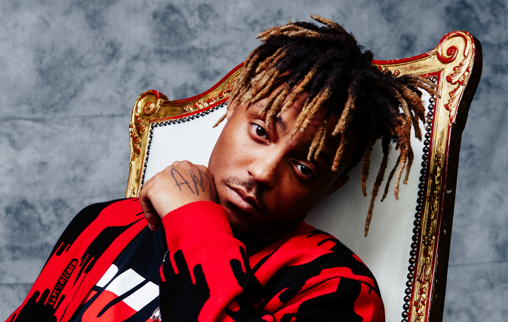

ABOUT
Jarad Anthony Higgins (December 2, 1998 December 8, 2019), known professionally as Juice Wrld (pronounced "juice world"; stylized as Juice WRLD), was an American rapper, singer, and songwriter. He is considered to be a leading figure in the development and popularity of emo-rap and SoundCloud rap. His stage name is derived from the film Juice (1992) and he stated it represents "taking over the world".
Higgins began his career as an independent artist in 2015 and signed a recording contract with Grade A Productions and Interscope Records in 2017. He gained recognition with his 2018 single "Lucid Dreams", which peaked at number two on the US Billboard Hot 100. It was included on his triple platinum debut studio album Goodbye & Good Riddance (2018), alongside the singles "All Girls Are the Same", "Lean wit Me", "Wasted", and "Armed and Dangerous", all of which charted on the Hot 100. He then collaborated with Future on the mixtape Wrld on Drugs (2018), and released his second album, Death Race for Love, in 2019; it contained the platinum singles "Robbery" and "Hear Me Calling" and became Higgins' first number one debut on the US Billboard 200.
Higgins died following a drug overdose on December 8, 2019. His first posthumous album, Legends Never Die (2020), matched chart records for most successful posthumous debut and for most U.S. top-ten entries from one album, while the single "Come & Go" (with Marshmello) became Higgins' second song to reach number two on the Hot 100. His second posthumous album, Fighting Demons, was released in 2021 alongside the documentary film Juice Wrld: Into the Abyss, and contained the US top 20 single "Already Dead".